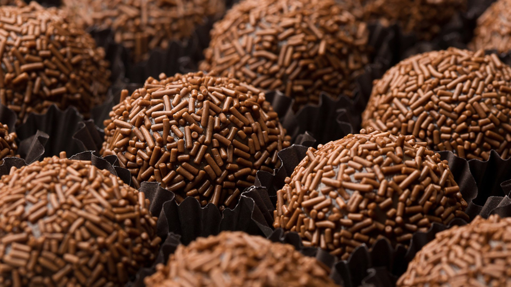

Brigadeiro

Description
There is a great Brazilian sweet that is like a bonbon and extremely
scrumptious and delicious called brigadeiro! This is a great type of sweet
that is loved here in Brazil! Try it! You can make it in the microwave
too, just remember to stir every minute.
Ingredients
Yields 20 servings
- 3 tablespoons unsweetened cocoa
- 1 tablespoon butter
- 1 (14 ounce) can sweetened condensed milk
Steps
-
In a medium saucepan over medium heat, combine cocoa, butter and
condensed milk.
- Cook, stirring, untli thickened, about 10 minutes.
- Remove from heat and let rest until cool engouht to handle.
- Form into small balls and eat at once or chill untill serving.